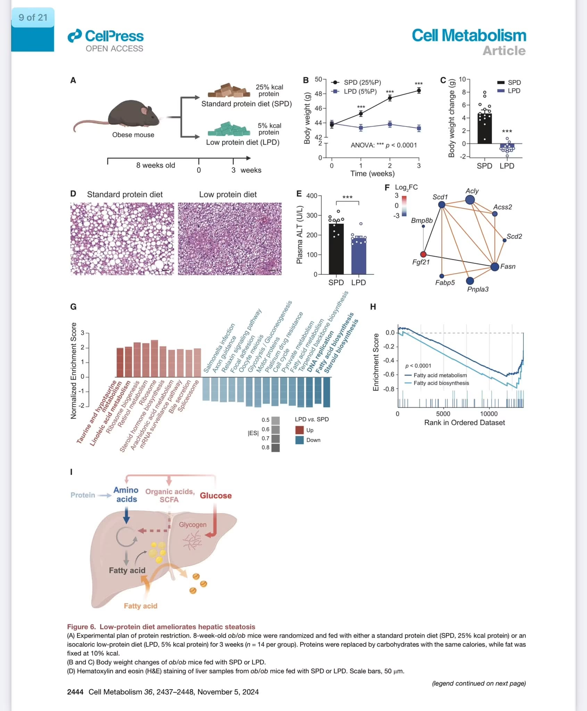
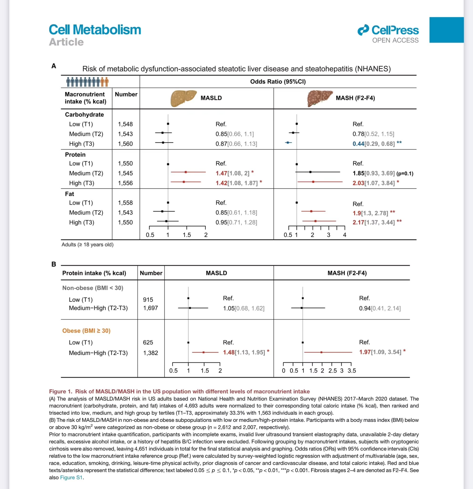

Excess high quality protein consumption may cause fatty liver disease (MASLD).
mTOR may be playing a role.
Quoted:
“The macronutrient driver of hepatic steatosis and metabolic dysfunction-associated steatotic liver disease (MASLD) has not been fully defined. Liao et al. identify high dietary protein consumption as a significant risk factor for MASLD/MASH in the NHANES study. The authors further establish amino acids as a prime substrate fueling hepatic lipogenesis, as demonstrated through isotope tracing and a series of chemical, genetic, and dietary intervention studies.”
#proteinHD #fattyliverHD #liverfatHD #mtorHD #fgf21HD
🔬 Rethinking the Role of Protein in Liver Metabolism and MASLD
Paper · Cell MetabolismCell Metabolism articlecell.com
New research in Cell Metabolism sheds light on the complex role of dietary protein and amino acids in hepatic lipid synthesis (de novo lipogenesis, or DNL) and metabolic health. Traditionally, the focus has been on carbohydrates and fats in metabolic-associated liver diseases (MASLD), but the contribution of dietary protein deserves more attention.
Key findings include:
- To examine the role of macronutrients in MASLD/MASH, we first performed an epidemiological analysis for the National Health and Nutrition Examination Survey (NHANES) dataset (4,693 participants with complete information; Figures 1A, S1A, and S1B). Contrary to the commonly held belief, neither carbohydrate nor total fat intake showed a significant association with increased MASLD incidence, and low carbohydrate intake was associated with an approximately 2-fold higher risk of MASH progression. Instead, dietary protein content was positively correlated with a greater risk of MASLD (increased by ∼1.45-fold in the medium/high-protein intake group, respectively). Furthermore, high-protein intake doubled the risk of developing MASH, similar to that observed with medium/high-fat intake.
- Amino Acids in Lipid Synthesis: Beyond their signaling roles, amino acids (both essential and non-essential) serve as direct carbon sources for fatty acid synthesis, contributing to ∼75% of hepatic DNL.
- Protein Overconsumption Risks: Excess protein may fuel hepatic gluconeogenesis and lipogenesis, exceeding the liver's energy needs and impacting liver health.
- Protein Restriction Benefits: Low-protein diets (LPD) have shown benefits like weight loss, fat mass reduction, and improved metabolic markers, partly through mechanisms like FGF21 upregulation and mTOR suppression.
- Biphasic Effects of Protein: While high-protein diets (≥35% kcal) can reduce fat deposition, outcomes vary depending on amino acid composition (e.g., negative effects of methionine/BCAA vs. benefits of cysteine).
Understanding the “dietary protein paradox” requires further exploration of the diverse metabolic roles of amino acid classes. This nuanced perspective on protein intake could shape future strategies for managing MASLD and improving liver health.
#LiverHealth #MASLD #NutritionScience #Metabolism #DietaryProtein #AminoAcids


